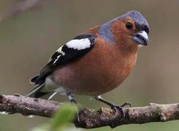
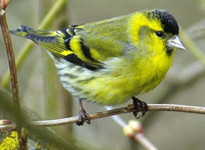

S'entraîner avec la barre de défilement horizontale
Objectif : Naviguer vers la droite et vers la gauche en utilisant la barre de défilement horizontal et son curseur de déplacement
💡 Conseil important
Déplacez-vous vers la droite en utilisant la barre de défilement en bas de la zone des oiseaux. Le curseur est beaucoup plus long qu'à l'exercice précédent. Trouvez les 7 oiseaux cachés !
Rappel : utiliser la barre de défilement horizontale
La barre de défilement horizontal :
C'est la barre grisée en bas de la zone, avec un curseur de déplacement.
C'est la barre grisée en bas de la zone, avec un curseur de déplacement.
Aller à droite :
Cliquez sur le curseur, maintenez enfoncé et glissez vers la droite pour voir la suite.
Cliquez sur le curseur, maintenez enfoncé et glissez vers la droite pour voir la suite.
Revenir à gauche :
Cliquez sur le curseur, maintenez enfoncé et glissez vers la gauche pour revenir en arrière.
Cliquez sur le curseur, maintenez enfoncé et glissez vers la gauche pour revenir en arrière.
Astuce :
Pensez à la fermeture éclair : suivez bien la glissière sans lâcher le curseur !
Pensez à la fermeture éclair : suivez bien la glissière sans lâcher le curseur !
Aide visuelle


Le curseur fonctionne comme une fermeture éclair, mais à l'horizontale
Faites défiler vers la droite pour trouver les 7 oiseaux, puis revenez au début
 1
1
 2
2

3
4 5
5
 6
6
 7
7